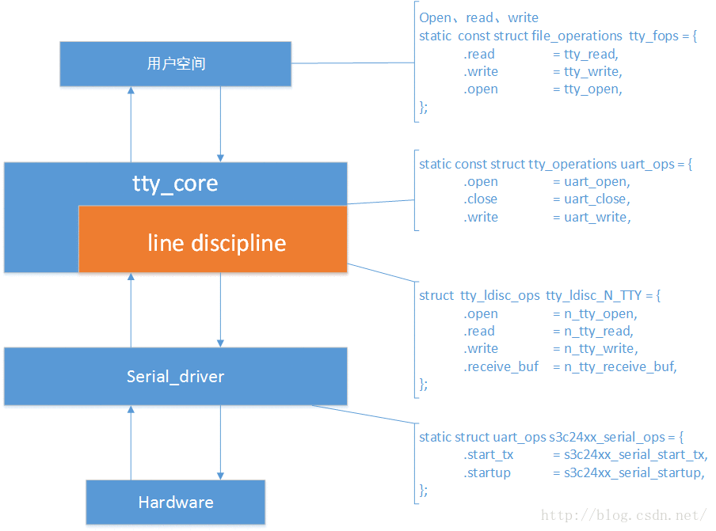
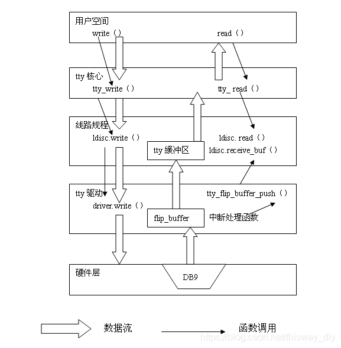

概述
分析一下qcm2290 uart驱动架构
参考
kernel config
CONFIG_SERIAL_CORE=y
CONFIG_SERIAL_MSM_GENI=y
CONFIG_SERIAL_MSM_GENI_HALF_SAMPLING=y
CONFIG_SERIAL_MSM_GENI_CONSOLE=y
CONFIG_TTY=y
Makefile
serial/Makefile:
obj-$(CONFIG_SERIAL_CORE) += serial_core.o
obj-$(CONFIG_SERIAL_MSM_GENI) += msm_geni_serial.o
tty/serial/Makefile:
obj-$(CONFIG_TTY) += tty_io.o n_tty.o tty_ioctl.o tty_ldisc.o \
tty_buffer.o tty_port.o tty_mutex.o \
tty_ldsem.o tty_baudrate.o tty_jobctrl.o \
n_null.o
dts
驱动中定义了两种串口，普通和流控高速：
static const struct of_device_id msm_geni_device_tbl[] = {
#if defined(CONFIG_SERIAL_CORE_CONSOLE) || defined(CONFIG_CONSOLE_POLL)
{ .compatible = "qcom,msm-geni-console",
.data = (void *)&msm_geni_console_driver},
#endif
{ .compatible = "qcom,msm-geni-serial-hs",
.data = (void *)&msm_geni_serial_hs_driver},
{},
};
scuba-qupv3.dtsi中HS UART表示开了流控的uart:
/* HS UART Instance */
qupv3_se3_4uart: qcom,qup_uart@4a8c000 {
compatible = "qcom,msm-geni-serial-hs";
reg = <0x4a8c000 0x4000>;
reg-names = "se_phys";
interrupts-extended = <&intc GIC_SPI 330 IRQ_TYPE_LEVEL_HIGH>,
<&tlmm 11 IRQ_TYPE_LEVEL_HIGH>;
clock-names = "se-clk", "m-ahb", "s-ahb";
clocks = <&gcc GCC_QUPV3_WRAP0_S3_CLK>,
<&gcc GCC_QUPV3_WRAP_0_M_AHB_CLK>,
<&gcc GCC_QUPV3_WRAP_0_S_AHB_CLK>;
pinctrl-names = "default", "active", "sleep";
pinctrl-0 = <&qupv3_se3_default_ctsrtsrx>,
<&qupv3_se3_default_tx>;
pinctrl-1 = <&qupv3_se3_ctsrx>, <&qupv3_se3_rts>,
<&qupv3_se3_tx>;
pinctrl-2 = <&qupv3_se3_ctsrx>, <&qupv3_se3_rts>,
<&qupv3_se3_tx>;
qcom,wakeup-byte = <0xFD>;
qcom,wrapper-core = <&qupv3_0>;
status = "disabled";
};
//[feature]-add-begin 20220805,for se1 hs uart,tlmm 70 -> rx
/*HS MAIN UART*/
qupv3_se1_5uart: qcom,qup_uart@4a84000{
compatible = "qcom,msm-geni-serial-hs";
reg = <0x4a84000 0x4000>;
reg-names = "se_phys";
interrupts = <GIC_SPI 328 IRQ_TYPE_LEVEL_HIGH>,
<&tlmm 70 0>;
clock-names = "se-clk", "m-ahb", "s-ahb";
clocks = <&gcc GCC_QUPV3_WRAP0_S1_CLK>,
<&gcc GCC_QUPV3_WRAP_0_M_AHB_CLK>,
<&gcc GCC_QUPV3_WRAP_0_S_AHB_CLK>;
pinctrl-names = "default", "sleep";
pinctrl-0 = <&qupv3_se1_ctsrx>, <&qupv3_se1_rts>,
<&qupv3_se1_tx>;
pinctrl-1 = <&qupv3_se1_ctsrx>, <&qupv3_se1_rts>,
<&qupv3_se1_tx>;
qcom,wakeup-byte = <0xFD>;
qcom,wrapper-core = <&qupv3_0>;
status = "okay";
};
/* Debug UART Instance */
qupv3_se4_2uart: qcom,qup_uart@4a90000 {
compatible = "qcom,msm-geni-console";
reg = <0x4a90000 0x4000>;
reg-names = "se_phys";
interrupts = <GIC_SPI 331 IRQ_TYPE_LEVEL_HIGH>;
clock-names = "se-clk", "m-ahb", "s-ahb";
clocks = <&gcc GCC_QUPV3_WRAP0_S4_CLK>,
<&gcc GCC_QUPV3_WRAP_0_M_AHB_CLK>,
<&gcc GCC_QUPV3_WRAP_0_S_AHB_CLK>;
pinctrl-names = "default", "sleep";
pinctrl-0 = <&qupv3_se4_2uart_active>;
pinctrl-1 = <&qupv3_se4_2uart_sleep>;
qcom,wrapper-core = <&qupv3_0>;
status = "disabled";
};
软件架构

整个uart 框架大概如上图所示，简单来分的话可以说成两层，一层是下层我们的串口驱动层，它直接与硬件接触，我们需要填充一个 struct uart_ops 的结构体，另一层是上层 tty 层，包括 tty 核心以及线路规程，它们各自都有一个 Ops 结构，用户空间通过 tty 注册的字符设备节点来访问，这么说来如上图所示涉及到了4个 ops 结构了，层层跳转。下面，就来分析分析它们的层次结构。
tty serial driver平台驱动分析
在qcm2290平台，它是这样来注册串口驱动的：分配一个struct uart_driver 简单填充，并调用uart_register_driver注册到内核中去，其中console_register接口只是对uart_register_driver的封装，所以qcm注册了高速和低速两个串口driver，名称是/dev/ttyHS*和/dev/ttyMSM*。
在注册 driver 时，会根据GENI_UART_NR_PORTS和GENI_UART_CONS_PORTS来申请 nr 个 uart_state 空间，用来存放驱动所支持的串口（端口）的物理信息，HS高速的只有一个。
#define GENI_UART_NR_PORTS (15)
#define GENI_UART_CONS_PORTS (1)
static const struct uart_ops msm_geni_console_pops = {
.tx_empty = msm_geni_serial_tx_empty,
.stop_tx = msm_geni_serial_stop_tx,
.start_tx = msm_geni_serial_start_tx,
.stop_rx = msm_geni_serial_stop_rx,
.set_termios = msm_geni_serial_set_termios,
.startup = msm_geni_serial_startup,
.config_port = msm_geni_serial_config_port,
.shutdown = msm_geni_serial_shutdown,
.type = msm_geni_serial_get_type,
.set_mctrl = msm_geni_cons_set_mctrl,
.get_mctrl = msm_geni_cons_get_mctrl,
#ifdef CONFIG_CONSOLE_POLL
.poll_get_char = msm_geni_serial_get_char,
.poll_put_char = msm_geni_serial_poll_put_char,
#endif
.pm = msm_geni_serial_cons_pm,
};
static const struct uart_ops msm_geni_serial_pops = {
.tx_empty = msm_geni_serial_tx_empty,
.stop_tx = msm_geni_serial_stop_tx,
.start_tx = msm_geni_serial_start_tx,
.stop_rx = msm_geni_serial_stop_rx,
.set_termios = msm_geni_serial_set_termios,
.startup = msm_geni_serial_startup,
.config_port = msm_geni_serial_config_port,
.shutdown = msm_geni_serial_shutdown,
.type = msm_geni_serial_get_type,
.set_mctrl = msm_geni_serial_set_mctrl,
.get_mctrl = msm_geni_serial_get_mctrl,
.break_ctl = msm_geni_serial_break_ctl,
.flush_buffer = NULL,
.ioctl = msm_geni_serial_ioctl,
};
static int __init msm_geni_serial_init(void)
{
int ret = 0;
int i;
for (i = 0; i < GENI_UART_NR_PORTS; i++) {
msm_geni_serial_ports[i].uport.iotype = UPIO_MEM;
msm_geni_serial_ports[i].uport.ops = &msm_geni_serial_pops;
msm_geni_serial_ports[i].uport.flags = UPF_BOOT_AUTOCONF;
msm_geni_serial_ports[i].uport.line = i;
}
for (i = 0; i < GENI_UART_CONS_PORTS; i++) {
msm_geni_console_port.uport.iotype = UPIO_MEM;
msm_geni_console_port.uport.ops = &msm_geni_console_pops;
msm_geni_console_port.uport.flags = UPF_BOOT_AUTOCONF;
msm_geni_console_port.uport.line = i;
}
ret = console_register(&msm_geni_console_driver);
if (ret)
return ret;
ret = uart_register_driver(&msm_geni_serial_hs_driver);
if (ret) {
uart_unregister_driver(&msm_geni_console_driver);
return ret;
}
ret = platform_driver_register(&msm_geni_serial_platform_driver);
if (ret) {
console_unregister(&msm_geni_console_driver);
uart_unregister_driver(&msm_geni_serial_hs_driver);
return ret;
}
pr_info("%s: Driver initialized\n", __func__);
return ret;
}
static struct uart_driver msm_geni_serial_hs_driver = {
.owner = THIS_MODULE,
.driver_name = "msm_geni_serial_hs",
.dev_name = "ttyHS",
.nr = GENI_UART_NR_PORTS,
};
static struct uart_driver msm_geni_console_driver = {
.owner = THIS_MODULE,
.driver_name = "msm_geni_console",
.dev_name = "ttyMSM",
.nr = GENI_UART_CONS_PORTS,
.cons = &cons_ops,
};
这个结构体，是需要我们自己来填充的，比如qcm2290有3个串口，那么就需要填充3个 uart_port ，并且通过 uart_add_one_port 添加到 uart_driver->uart_state->uart_port 中去。当然uart_driver有多个uart_state ，每个uart_state有一个uart_port。其中line表示端口索引，比较常用，比如 ttyHS1的line就等于1。
struct uart_port {
spinlock_t lock; /* port lock */
unsigned long iobase; /* io端口基地址（物理） */
unsigned char __iomem *membase; /* io内存基地址（虚拟） */
unsigned int (*serial_in)(struct uart_port *, int);
void (*serial_out)(struct uart_port *, int, int);
unsigned int irq; /* 中断号 */
unsigned long irqflags; /* 中断标志 */
unsigned int uartclk; /* 串口时钟 */
unsigned int fifosize; /* 串口缓冲区大小 */
unsigned char x_char; /* xon/xoff char */
unsigned char regshift; /* 寄存器位移 */
unsigned char iotype; /* IO访问方式 */
unsigned char unused1;
unsigned int read_status_mask; /* 关心 Rx error status */
unsigned int ignore_status_mask; /* 忽略 Rx error status */
struct uart_state *state; /* pointer to parent state */
struct uart_icount icount; /* 串口信息计数器 */
struct console *cons; /* struct console, if any */
#if defined(CONFIG_SERIAL_CORE_CONSOLE) || defined(SUPPORT_SYSRQ)
unsigned long sysrq; /* sysrq timeout */
#endif
upf_t flags;
unsigned int mctrl; /* 当前的Moden 设置 */
unsigned int timeout; /* character-based timeout */
unsigned int type; /* 端口类型 */
const struct uart_ops *ops; /* 串口端口操作函数 */
unsigned int custom_divisor;
unsigned int line; /* 端口索引 */
resource_size_t mapbase; /* io内存物理基地址 */
struct device *dev; /* 父设备 */
unsigned char hub6; /* this should be in the 8250 driver */
unsigned char suspended;
unsigned char unused[2];
void *private_data; /* generic platform data pointer */
};
static struct msm_geni_serial_port *get_port_from_line(int line,
bool is_console)
{
struct msm_geni_serial_port *port = NULL;
if (is_console) {
/* Max 1 port supported as of now */
if ((line < 0) || (line >= GENI_UART_CONS_PORTS))
return ERR_PTR(-ENXIO);
port = &msm_geni_console_port; //msm_geni_console_port.uport.ops 比较重要
} else {
if ((line < 0) || (line >= GENI_UART_NR_PORTS))
return ERR_PTR(-ENXIO);
port = &msm_geni_serial_ports[line];
}
return port;
}
static int msm_geni_serial_probe(struct platform_device *pdev)
{
struct msm_geni_serial_port *dev_port;
struct uart_port *uport;
dev_port = get_port_from_line(line, is_console); //根据line寻找port，里面有ops硬件操作函数
if (IS_ERR_OR_NULL(dev_port)) {
ret = PTR_ERR(dev_port);
dev_err(&pdev->dev, "Invalid line %d(%d)\n",
line, ret);
goto exit_geni_serial_probe;
}
dev_port->is_console = is_console;
uport = &dev_port->uport;
ret = uart_add_one_port(drv, uport);
if (ret)
goto exit_workqueue_destroy;
}
具体的ops释义如下：
struct uart_ops {
unsigned int (*tx_empty)(struct uart_port *); /* 串口的Tx FIFO缓存是否为空 */
void (*set_mctrl)(struct uart_port *, unsigned int mctrl); /* 设置串口modem控制 */
unsigned int (*get_mctrl)(struct uart_port *); /* 获取串口modem控制 */
void (*stop_tx)(struct uart_port *); /* 禁止串口发送数据 */
void (*start_tx)(struct uart_port *); /* 使能串口发送数据 */
void (*send_xchar)(struct uart_port *, char ch); /* 发送xChar */
void (*stop_rx)(struct uart_port *); /* 禁止串口接收数据 */
void (*enable_ms)(struct uart_port *); /* 使能modem的状态信号 */
void (*break_ctl)(struct uart_port *, int ctl); /* 设置break信号 */
int (*startup)(struct uart_port *); /* 启动串口,应用程序打开串口设备文件时,该函数会被调用 */
void (*shutdown)(struct uart_port *);/* 关闭串口,应用程序关闭串口设备文件时,该函数会被调用 */
void (*flush_buffer)(struct uart_port *);
void (*set_termios)(struct uart_port *, struct ktermios *new,
struct ktermios *old); /* 设置串口参数 */
void (*set_ldisc)(struct uart_port *);/* 设置线路规程 */
void (*pm)(struct uart_port *, unsigned int state,
unsigned int oldstate); /* 串口电源管理 */
int (*set_wake)(struct uart_port *, unsigned int state);
/*
* Return a string describing the type of the port
*/
const char *(*type)(struct uart_port *);
/*
* Release IO and memory resources used by the port.
* This includes iounmap if necessary.
*/
void (*release_port)(struct uart_port *);
/*
* Request IO and memory resources used by the port.
* This includes iomapping the port if necessary.
*/
int (*request_port)(struct uart_port *); /* 申请必要的IO端口/IO内存资源,必要时还可以重新映射串口端口 */
void (*config_port)(struct uart_port *, int); /* 执行串口所需的自动配置 */
int (*verify_port)(struct uart_port *, struct serial_struct *); /* 核实新串口的信息 */
int (*ioctl)(struct uart_port *, unsigned int, unsigned long);
#ifdef CONFIG_CONSOLE_POLL
void (*poll_put_char)(struct uart_port *, unsigned char);
int (*poll_get_char)(struct uart_port *);
#endif
};
tty 核心层
tty 层要从 uart_register_driver来看起了，因为tty_driver是在注册过程中构建的，我们也顺便了解注册过程。
serial_core.c
int uart_register_driver(struct uart_driver *drv)
{
struct tty_driver *normal = NULL;
int i, retval;
/* 根据driver支持的最大设备数，申请n个 uart_state 空间，每一个 uart_state 都有一个uart_port */
drv->state = kzalloc(sizeof(struct uart_state) * drv->nr, GFP_KERNEL);
/* tty层：分配一个 tty_driver ，并将drv->tty_driver 指向它 */
normal = alloc_tty_driver(drv->nr);
drv->tty_driver = normal;
/* 对 tty_driver 进行设置 */
normal->owner = drv->owner;
normal->driver_name = drv->driver_name;
normal->name = drv->dev_name;
normal->major = drv->major;
normal->minor_start = drv->minor;
normal->type = TTY_DRIVER_TYPE_SERIAL;
normal->subtype = SERIAL_TYPE_NORMAL;
normal->init_termios = tty_std_termios;
normal->init_termios.c_cflag = B9600 | CS8 | CREAD | HUPCL | CLOCAL;
normal->init_termios.c_ispeed = normal->init_termios.c_ospeed = 9600;
normal->flags = TTY_DRIVER_REAL_RAW | TTY_DRIVER_DYNAMIC_DEV;
normal->driver_state = drv;
tty_set_operations(normal, &uart_ops);
/*
* Initialise the UART state(s).
*/
for (i = 0; i < drv->nr; i++) {
struct uart_state *state = drv->state + i;
struct tty_port *port = &state->port; /* driver->state->tty_port */
tty_port_init(port);
port->close_delay = 500; /* .5 seconds */
port->closing_wait = 30000; /* 30 seconds */
/* 初始化 tasklet */
tasklet_init(&state->tlet, uart_tasklet_action,
(unsigned long)state);
}
/* tty层：注册 driver->tty_driver */
retval = tty_register_driver(normal);
}
注册过程干了哪些事：
根据driver支持的最大设备数，申请n个 uart_state 空间，每一个 uart_state 都有一个 uart_port 。
分配一个 tty_driver ，并将drv->tty_driver 指向它。
对 tty_driver 进行设置，其中包括默认波特率、校验方式等，还有一个重要的Ops ，uart_ops ，它是tty核心与我们串口驱动通信的接口。
初始化每一个 uart_state 的 tasklet 。
注册 tty_driver 。 注册 uart_driver 实际上是注册 tty_driver，因此与用户空间打交道的工作完全交给了 tty_driver ，而且这一部分都是内核实现好的，我们不需要修改，了解一下工作原理即可。
static const struct tty_operations uart_ops = {
.open = uart_open,
.close = uart_close,
.write = uart_write,
.put_char = uart_put_char, // 单字节写函数
.flush_chars = uart_flush_chars, // 刷新数据到硬件函数
.write_room = uart_write_room, // 指示多少缓冲空闲的函数
.chars_in_buffer= uart_chars_in_buffer, // 只是多少缓冲满的函数
.flush_buffer = uart_flush_buffer, // 刷新数据到硬件
.ioctl = uart_ioctl,
.throttle = uart_throttle,
.unthrottle = uart_unthrottle,
.send_xchar = uart_send_xchar,
.set_termios = uart_set_termios, // 当termios设置被改变时又tty核心调用
.set_ldisc = uart_set_ldisc, // 设置线路规程函数
.stop = uart_stop,
.start = uart_start,
.hangup = uart_hangup, // 挂起函数，当驱动挂起tty设备时调用
.break_ctl = uart_break_ctl, // 线路中断控制函数
.wait_until_sent= uart_wait_until_sent,
#ifdef CONFIG_PROC_FS
.proc_fops = &uart_proc_fops,
#endif
.tiocmget = uart_tiocmget, // 获得当前tty的线路规程的设置
.tiocmset = uart_tiocmset, // 设置当前tty线路规程的设置
#ifdef CONFIG_CONSOLE_POLL
.poll_init = uart_poll_init,
.poll_get_char = uart_poll_get_char,
.poll_put_char = uart_poll_put_char,
#endif
};
这个是 tty 核心的 Ops ，简单看看，等后面分析调用关系时，在来细看，下面来看 tty_driver 的注册。
static int tty_cdev_add(struct tty_driver *driver, dev_t dev,
unsigned int index, unsigned int count)
{
int err;
/* init here, since reused cdevs cause crashes */
driver->cdevs[index] = cdev_alloc();
if (!driver->cdevs[index])
return -ENOMEM;
driver->cdevs[index]->ops = &tty_fops;
driver->cdevs[index]->owner = driver->owner;
err = cdev_add(driver->cdevs[index], dev, count);
if (err)
kobject_put(&driver->cdevs[index]->kobj);
return err;
}
int tty_register_driver(struct tty_driver *driver)
{
int error;
int i;
dev_t dev;
void **p = NULL;
if (!(driver->flags & TTY_DRIVER_DEVPTS_MEM) && driver->num) {
p = kzalloc(driver->num * 2 * sizeof(void *), GFP_KERNEL);
}
/* 如果没有主设备号则申请 */
if (!driver->major) {
error = alloc_chrdev_region(&dev, driver->minor_start,
driver->num, driver->name);
} else {
dev = MKDEV(driver->major, driver->minor_start);
error = register_chrdev_region(dev, driver->num, driver->name);
}
if (p) { /* 为线路规程和termios分配空间 */
driver->ttys = (struct tty_struct **)p;
driver->termios = (struct ktermios **)(p + driver->num);
} else {
driver->ttys = NULL;
driver->termios = NULL;
}
/* 创建字符设备，使用 tty_fops */
if (driver->flags & TTY_DRIVER_DYNAMIC_ALLOC) {
error = tty_cdev_add(driver, dev, 0, driver->num);
if (error)
goto err_unreg_char;
}
mutex_lock(&tty_mutex);
/* 将该 driver->tty_drivers 添加到全局链表 tty_drivers */
list_add(&driver->tty_drivers, &tty_drivers);
mutex_unlock(&tty_mutex);
if (!(driver->flags & TTY_DRIVER_DYNAMIC_DEV)) {
for (i = 0; i < driver->num; i++)
tty_register_device(driver, i, NULL);
}
/* proc 文件系统注册driver */
proc_tty_register_driver(driver);
driver->flags |= TTY_DRIVER_INSTALLED;
return 0;
}
tty_driver 注册过程干了哪些事：
为线路规程和termios分配空间，并使 tty_driver 相应的成员指向它们。
注册字符设备，名字是 uart_driver->name 我们这里是“ttySAC”,文件操作函数集是 tty_fops。
将该 uart_driver->tty_drivers 添加到全局链表 tty_drivers 。
向 proc 文件系统添加 driver ，这个暂时不了解。 至此，文章起初的结构图中的4个ops已经出现了3个，另一个关于线路规程的在哪？继续往下看。
tty open调用流程
tty_driver 不是注册了一个字符设备么，那我们就以它的 tty_fops 入手，以 open、read、write 为例，看看用户空间是如何访问到最底层的硬件操作函数的。
整体流程如下：
* tty_open(struct inode *inode, struct file *filp)
└── __tty_open(inode, filp);
├── tty = tty_open_by_driver(device, inode, filp);
│ └── tty = tty_init_dev(driver, index);
│ ├── tty = alloc_tty_struct();
│ │ └── if (tty_ldisc_init(tty))/* 设置线路规程为 N_TTY */
│ └── tty_ldisc_setup(tty, tty->link);
│ └── retval = tty_ldisc_open(o_tty, o_tty->ldisc);
│ └── ret = ld->ops->open(tty); //在 tty_ldisc_setup 函数中调用到线路规程的open函数,显然是uart_open
└── retval = tty->ops->open(tty, filp);
tty_io.c:
static int tty_open(struct inode *inode, struct file *filp)
{
int ret;
lock_kernel();
ret = __tty_open(inode, filp);
unlock_kernel();
return ret;
}
//为了方便分析，我把看不懂的代码都删掉了。
static int __tty_open(struct inode *inode, struct file *filp)
{
struct tty_struct *tty = NULL;
int noctty, retval;
struct tty_driver *driver;
int index;
dev_t device = inode->i_rdev;
unsigned saved_flags = filp->f_flags;
...
//在全局tty_drivers链表中获取Core注册的tty_driver
tty = tty_open_current_tty(device, filp);
if (!tty)
tty = tty_open_by_driver(device, inode, filp);
filp->private_data = tty;
if (tty->ops->open)
/* 调用tty_driver->tty_foperation->open */
retval = tty->ops->open(tty, filp);
return 0;
}
static struct tty_struct *tty_open_by_driver(dev_t device, struct inode *inode,
struct file *filp)
{
/* check whether we're reopening an existing tty */
tty = tty_driver_lookup_tty(driver, filp, index);
if (IS_ERR(tty)) {
mutex_unlock(&tty_mutex);
goto out;
}
if (tty) {
}else { /* Returns with the tty_lock held for now */
tty = tty_init_dev(driver, index);
mutex_unlock(&tty_mutex);
}
}
//从 tty_drivers 全局链表获取到前边我们注册进去的 tty_driver ，然后分配设置一个 struct tty_struct 的东西，最后调用 tty_struct->ops->open 函数，其实 tty_struct->ops == tty_driver->ops 。
struct tty_struct *tty_init_dev(struct tty_driver *driver, int idx, int first_ok)
{
struct tty_struct *tty;
int retval;
/* 分配一个 tty_struct */
tty = alloc_tty_struct();
if (!tty->port)
tty->port = driver->ports[idx];
//tty_ldisc_open(tty, ld)-> return ld->ops->open(tty) -> n_tty_open
retval = tty_ldisc_setup(tty, tty->link);
return tty;
}
struct tty_struct *alloc_tty_struct(struct tty_driver *driver, int idx)
{
/* 设置线路规程为 N_TTY */
if (tty_ldisc_init(tty)) {
kfree(tty);
return NULL;
}
}
int tty_ldisc_setup(struct tty_struct *tty, struct tty_struct *o_tty)
{
int retval = tty_ldisc_open(tty, tty->ldisc);
if (retval)
return retval;
if (o_tty) {
retval = tty_ldisc_open(o_tty, o_tty->ldisc);
if (retval) {
tty_ldisc_close(tty, tty->ldisc);
return retval;
}
}
return 0;
}
static int tty_ldisc_open(struct tty_struct *tty, struct tty_ldisc *ld)
{
WARN_ON(test_and_set_bit(TTY_LDISC_OPEN, &tty->flags));
if (ld->ops->open) {
int ret;
/* BTM here locks versus a hangup event */
ret = ld->ops->open(tty);
if (ret)
clear_bit(TTY_LDISC_OPEN, &tty->flags);
tty_ldisc_debug(tty, "%p: opened\n", ld);
return ret;
}
return 0;
}
整个 tty_open 的工作： 1、获取 tty_driver 2、根据 tty_driver 初始化一个 tty_struct 2.1 设置 tty_struct 的线路规程为 N_TTY (不同类型的线路规程有不同的 ops) 2.2 调用flush_to_ldisc ，读函数时我们需要分析它。 2.3 初始化 tty_struct 里的两个等待队列头。 2.4 设置 tty_struct->ops == tty_driver->ops 。 3、在 tty_ldisc_setup 函数中调用到线路规程的open函数，对于 N_TTY 来说是 n_tty_open 。 4、如果 tty_struct->ops 也就是 tty_driver->ops 定义了 open 函数则调用，显然是有的 uart_open 。
对于 n_tty_open ，它应该是对线路规程如何“格式化数据”进行设置，太复杂了，忽略掉吧，跟我们没多大关系。对于 uart_open 还是有必要贴下代码。
tty_port.c
* uart_open(struct tty_struct *tty, struct file *filp)
└── tty_port_open(&state->port, tty, filp);
└── port->ops->activate(port, tty)
└── static const struct tty_port_operations uart_port_ops = {.activate = uart_port_activate, //serial_core.c
└── ret = uart_startup(tty, state, 0);
└── retval = uart_port_startup(tty, state, init_hw);
└── retval = uport->ops->startup(uport);
根据 tty_struct 获取到 uart_driver ，再由 uart_driver 获取到里面 的uart_state->uart_port->ops->startup 并调用它。至此，open函数分析完毕，它不是简单的 “打开”，还有大量的初始化工作，最终调用到最底层的 startup 函数。
tty_write调用流程
tty_io.c:
* static ssize_t tty_write(struct file *file, const char __user *buf,
├── ld = tty_ldisc_ref_wait(tty); //获取线路规程
└── ret = do_tty_write(ld->ops->write, tty, file, buf, count); /* 调用 线路规程 n_tty_write 函数 */
└── ret = write(tty, file, tty->write_buf, size);
└── static ssize_t n_tty_write(struct tty_struct *tty, struct file *file, //N_tty.c
└── c = tty->ops->write(tty, b, nr);/* 调用到 uart_write */
└── static int uart_write(struct tty_struct *tty, //serial_core.c
└── __uart_start(tty);
└── port->ops->start_tx(port);
uart_write 又调用到了最底层的 uart_port->ops->start_tx 函数。 猜测一下，大概“写”的思路：
将当前进程加入到等待队列
设置当前进程为可打断的
层层调用最终调用到底层的 start_tx 函数，将要发送的数据存入 DATA 寄存器，由硬件自动发送。
进程调度，当前进程进入休眠。
硬件发送完成，进入中断处理函数，唤醒对面队列。
tty_read调用流程
static ssize_t tty_read(struct file *file, char __user *buf, size_t count,
loff_t *ppos)
{
int i;
struct tty_struct *tty;
struct inode *inode;
struct tty_ldisc *ld;
tty = (struct tty_struct *)file->private_data;
inode = file->f_path.dentry->d_inode;
ld = tty_ldisc_ref_wait(tty);
/* 调用线路规程 n_tty_read */
if (ld->ops->read)
i = (ld->ops->read)(tty, file, buf, count);
else
i = -EIO;
tty_ldisc_deref(ld);
if (i > 0)
inode->i_atime = current_fs_time(inode->i_sb);
return i;
}
调用线路规程的 read 函数，对于 N_TTY 来说是 n_tty_read (删掉了一堆看不懂的代码，还是有很多)
static ssize_t n_tty_read(struct tty_struct *tty, struct file *file,
unsigned char __user *buf, size_t nr)
{
unsigned char __user *b = buf;
DECLARE_WAITQUEUE(wait, current);
int c;
int minimum, time;
ssize_t retval = 0;
ssize_t size;
long timeout;
unsigned long flags;
int packet;
do_it_again:
BUG_ON(!tty->read_buf);
c = job_control(tty, file);
minimum = time = 0;
timeout = MAX_SCHEDULE_TIMEOUT;
/* 如果是非标准模式 */
if (!tty->icanon) {
...
}
packet = tty->packet;
add_wait_queue(&tty->read_wait, &wait);
while (nr) {
/* First test for status change. */
if (packet && tty->link->ctrl_status) {
/* 看不懂的都删掉 */
}
/* This statement must be first before checking for input
so that any interrupt will set the state back to
TASK_RUNNING. */
set_current_state(TASK_INTERRUPTIBLE);
if (((minimum - (b - buf)) < tty->minimum_to_wake) &&
((minimum - (b - buf)) >= 1))
tty->minimum_to_wake = (minimum - (b - buf));
if (!input_available_p(tty, 0)) {
/* 看不懂的都删掉 */
/* FIXME: does n_tty_set_room need locking ? */
n_tty_set_room(tty);
/* 进程调度 休眠 */
timeout = schedule_timeout(timeout);
continue;
}
__set_current_state(TASK_RUNNING);
/* Deal with packet mode. */
if (packet && b == buf) {
/* 看不懂的都删掉 */
}
/* 如果是标准模式 */
if (tty->icanon) {
/* N.B. avoid overrun if nr == 0 */
while (nr && tty->read_cnt) {
int eol;
eol = test_and_clear_bit(tty->read_tail,
tty->read_flags);
/* 从tty->read_buf 获取数据 */
c = tty->read_buf[tty->read_tail];
spin_lock_irqsave(&tty->read_lock, flags);
tty->read_tail = ((tty->read_tail+1) &
(N_TTY_BUF_SIZE-1));
tty->read_cnt--;
if (eol) {
/* this test should be redundant:
* we shouldn't be reading data if
* canon_data is 0
*/
if (--tty->canon_data < 0)
tty->canon_data = 0;
}
spin_unlock_irqrestore(&tty->read_lock, flags);
if (!eol || (c != __DISABLED_CHAR)) {
/* 将数据拷贝到用户空间 */
if (tty_put_user(tty, c, b++)) {
retval = -EFAULT;
b--;
break;
}
nr--;
}
if (eol) {
tty_audit_push(tty);
break;
}
}
if (retval)
break;
} else {
/* 非标准模式不关心删掉 */
}
....
}
mutex_unlock(&tty->atomic_read_lock);
remove_wait_queue(&tty->read_wait, &wait);
if (!waitqueue_active(&tty->read_wait))
tty->minimum_to_wake = minimum;
__set_current_state(TASK_RUNNING);
...
n_tty_set_room(tty);
return retval;
}
“读”过程干了哪些事：
将当前进程加入等待队列
设置当前进程可中断
进程调度，当前进程进入休眠
在某处被唤醒
从 tty->read_buf 取出数据，通过 tty_put_user 拷贝到用户空间。
void tty_flip_buffer_push(struct tty_struct *tty)
{
unsigned long flags;
spin_lock_irqsave(&tty->buf.lock, flags);
if (tty->buf.tail != NULL)
tty->buf.tail->commit = tty->buf.tail->used;
spin_unlock_irqrestore(&tty->buf.lock, flags);
if (tty->low_latency)
flush_to_ldisc(&tty->buf.work.work);
else
schedule_delayed_work(&tty->buf.work, 1);
}
tty_flip_buffer_push 有两种方式调用到 flush_to_ldisc ，一种直接调用，另一种使用延时工作队列，在很久很久以前，我们初始化了这么一个工作队列~（tty_open 初始化 tty_struct 时前面有提到）。
在flush_to_ldisc 会调用到 disc->ops->receive_buf ，对于 N_TTY 来说是 n_tty_receive_buf ，在 n_tty_receive_buf 中，将数据拷贝到 tty->read_buf ,然后 wake_up_interruptible(&tty->read_wait) 唤醒休眠队列。
然后就是前面提到的，在n_tty_read 函数中 从 tty->read_buf 里取出数据拷贝到用户空间了。
那么，在何处唤醒，猜测应该是在中断处理函数中，当DATA寄存器满，触发中断，中断处理函数中调用 tty_flip_buffer_push 。
io流程图
io操作流程图如下：

至此，关于 uart 的框架分析基本就结束了, 对于 tty 以及线路规程是什么东西，大概了解是个什么东西。虽然大部分东西都不需要我们自己实现，但是了解它们有益无害。